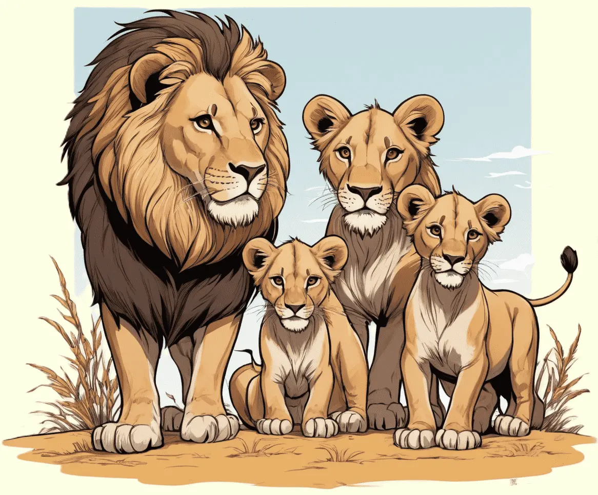

Löwen, majestätische Raubkatzen der Savanne, beeindrucken mit ihrer imposanten Mähne und ihrer starken Gemeinschaft.
Erkunde die aufregende Welt dieser faszinierenden Tiere und erfahre, wie sie in stolzen Rudeln leben.

Die Majestätischen Herrscher der Savanne
Löwen sind faszinierende Tiere, die oft als "Könige der Savanne" bezeichnet werden. Diese majestätischen Raubkatzen leben in den offenen Grasländern Afrikas und sind für ihre imposante Mähne bekannt, die bei den Männchen besonders auffällig ist. Löwen sind soziale Tiere und leben in Gruppen, die als Rudel bezeichnet werden. Ein Rudel besteht aus mehreren Weibchen, ihren Jungen und einem oder mehreren erwachsenen Männchen, dem sogenannten Löwen.
Die Männchen tragen beeindruckende Mähnen, die nicht nur sie imposant aussehen lassen, sondern auch eine Funktion erfüllen. Die Mähne schützt den Hals und Nacken des Löwen während Kämpfen und verleiht ihm eine majestätische Erscheinung.
Geschickte Jäger und faule Könige?
Löwen sind nicht nur beeindruckende Erscheinungen, sondern auch geschickte Jäger. Während die Weibchen oft für die Jagd verantwortlich sind, bewachen die Männchen das Territorium und schützen das Rudel vor möglichen Gefahren. Löwen sind starke, schnelle Tiere, die in der Lage sind, ihre Beute mit einem gezielten Sprung zu fangen.
Obwohl Löwen als Könige der Savanne bekannt sind, sind sie auch für ihre gemütliche Seite bekannt. Nach einer erfolgreichen Jagd können Löwen viele Stunden am Tag faulenzen und ausruhen. Dieser entspannte Lebensstil macht sie zu faszinierenden Geschöpfen und zu einem der beliebtesten Tiere der Welt.